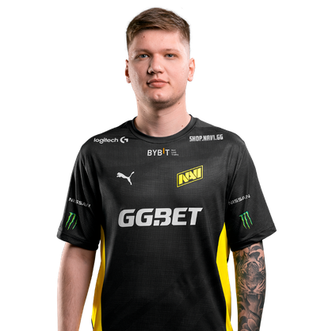

Алекса́ндр Оле́гович Ко́стылев (укр. Олександр Олегович Костилєв; род. 2 октября 1997, Киев) — украинский киберспортсмен, более известный под ником s1mple. Лучший игрок в дисциплине Counter-Strike: Global Offensive по версии портала HLTV.org по итогам 2018, 2021 и 2022 годов. В 2021 году в составе Natus Vincere стал победителем и MVP PGL Major Stockholm 2021. В октябре 2023 года объявил о приостановке карьеры профессионального игрока
Карьера Костылева началась в 2013 году. Он побывал в таких коллективах как LAN DODGERS, A-Gaming, Courage Gaming. 1 февраля 2014 года получил бан от ESL на 2 года за читерство и попытку обхода бана. В результате игрок не смог выступать на официальных турнирах, которые поддерживаются Valve до 2016 года.
Дорогие друзья, вчера был начислен бан нашему игроку «s1mple» за использование читов! Хотели бы пояснить для всех хэйтеров и так далее! Бан ему был дан несколько лет назад в другую версию игры «1.6». Кажется этот человек уже всем доказал, что использование сторонних программ — это не его стихия. Руководство нескольких организаций связывается с администрацией ESL для решения данного вопроса! Вопрос как такое могло получиться тревожит всех!
В середине сентября Костылев вступил в HellRaisers, но через 5 месяцев покинул его, перейдя в FlipSid3 Tactics. Первой крупной международной победой в карьере игрока стал матч HellRaisers и Fnatic. В июле 2015 года s1mple покинул команду, объяснив, что берет паузу. Однако через 3 дня игрок начал игру в коллективе Evolution, который в свою очередь просуществовал один месяц. Поиграв за команду Worst Players, Костылев стал помогать своим бывшим командам, играя стендином за HellRaisers и FlipSid3 Tactics. В январе 2016 года s1mple присоединился к команде Team Liquid, с которой занял второе место на ESL One: Cologne 2016.
4 августа 2016 года Костылев возвратился на родину, подписав контракт с Natus Vincere, заменив Даниила «Zeus» Тесленко. В составе Natus Vincere s1mple выиграл ESL One: New York 2016, стал серебряным призёром Adrenaline Cyber League 2017, StarLadder i-League StarSeries Season 5. 28 января 2017 года Natus Vincere покинула ELEAGUE Major 2017, проиграв в четвертьфинале команде Astralis со счетом 1-2 и заняв 5-8 место. 19 июля 2017 года Natus Vincere выбыла из турнира PGL Major Krakow 2017, заняв 12-14 место. 28 января 2018 года Natus Vincere стала бронзовым призёром ELEAGUE Major 2018, уступив в полуфинале команде FaZe со счетом 0-2. В одном из интервью s1mple сказал, что никогда не покинет Natus Vincere[10]. Но в марте 2018 года, по инсайдерским данным, команда SK хотела выкупить Костылева и его товарищa по команде Егора Васильевa, но сделка так и не свершилась из-за цены в 1 млн долларов. В июне 2018 года игрок команды Astralis Николай «device» Редтц (топ 2 мира за 2018 год по версии HLTV.org) назвал Костылева лучшим на тот момент игроком в мире. 23 сентября 2018 года команда Natus Vincere стала серебряным призёром FACEIT Major 2018, уступив в финале команде Astralis со счетом 0-2. 3 марта 2019 года Natus Vincere заняла также 3-е место на IEM Katowice 2019, проиграв в полуфинале команде ENCE со счетом 1-2. 6 сентября 2019 года Natus Vincere заняла 5-8 место на StarLadder Berlin Major 2019, проиграв в четвертьфинале команде NRG со счётом 0-2. 26 октября 2023 года s1mple покинул состав NAVI и объявил о приостановке карьеры профессионального игрока, взяв «перерыв». 19 февраля 2024 года было объявлено, что s1mple переходит в команду Falcons на правах месячной аренды и будет играть в ней в течение турнира BLAST Premier Spring Showdown.
